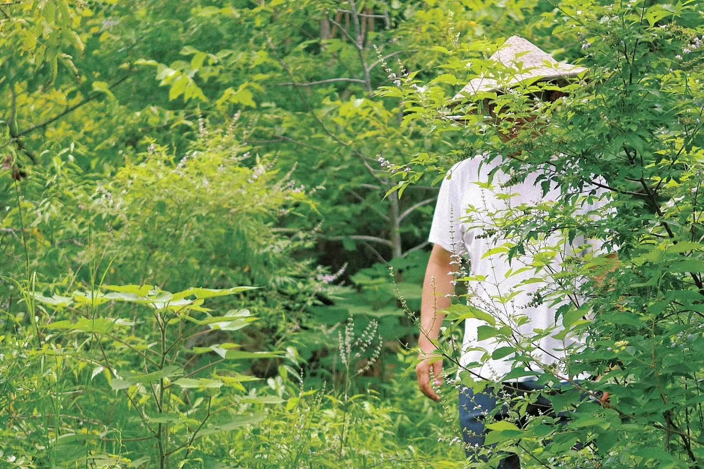

A Camera Is a Time Machine (Kind of)
· 6 min read

I used to think photography was about capturing moments. That phrase sounds right, like a slogan you’d see on a camera strap. But the longer I take photos, the more it feels less like “capturing” and more like measuring.
Not measuring in a clean, lab-report way—no rulers, no graphs, no perfect controls. More like measuring the way you can tell it’s getting colder by the sound of footsteps on pavement, or the way a room changes when someone leaves.
Exposure is a vote
A shutter isn’t just a door that opens and closes. It’s you deciding how much time matters for this image. A fast shutter says: “I want the instant.” A slow shutter says: “I want the duration.”
And that’s the weird part: a photo looks like a frozen frame, but it’s actually built out of time. Every image is a tiny treaty between light and duration.
“Reality” is already edited
Your eyes don’t give you raw truth either. They do automatic exposure. They do stabilization. Your brain does compression. It fills in gaps. It drops details. It rewrites.
So when people say photography is “less real” than seeing, I’m not convinced. It’s just a different set of choices. The camera makes its choices visible: focal length, depth of field, shutter speed, ISO. Seeing does the same thing—just without a settings menu.
What I’m actually collecting
I keep coming back to scenes that look ordinary while I’m there: a lake, a path, a roofline, a friend’s half-laugh. But later, the photo becomes evidence that I was a slightly different person when I took it.
The image doesn’t only store what was in front of the lens. It stores the angle of my attention. What I decided was worth keeping. What I didn’t.
So: is it a time machine?
Not the sci-fi kind. I can’t step back into that afternoon and re-run it. But I can reopen the feeling of it with surprising accuracy.
A photograph can’t bring back the past, but it can bring back the relationship you had with the past. Sometimes that’s enough. Sometimes it’s even better, because it lets you notice what you missed while you were busy living it.
If a camera is a time machine, it’s a humble one: it doesn’t move your body, it moves your attention. And honestly, attention is what I keep losing and trying to get back.
Next: I want to write about how “composition” feels like geometry you can hold in your hands.